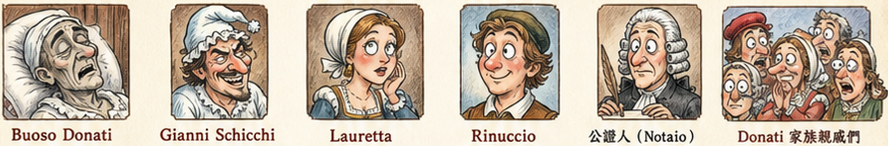
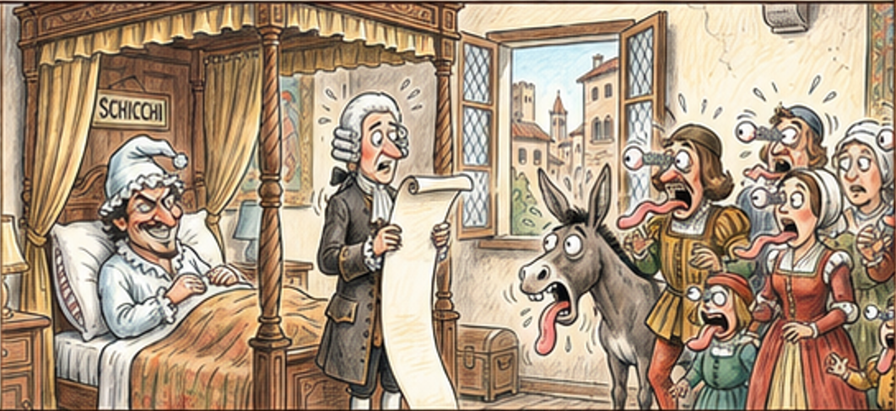
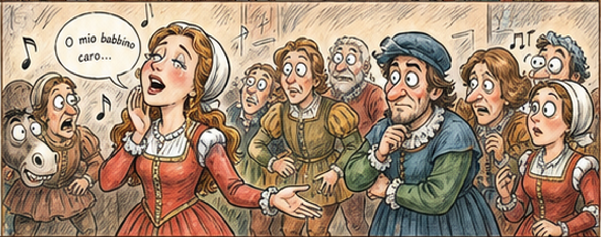
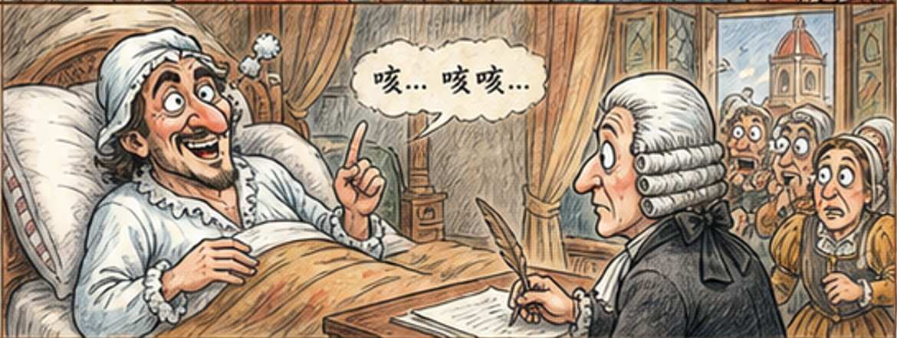
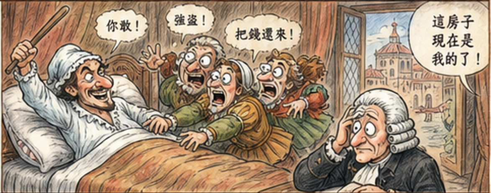
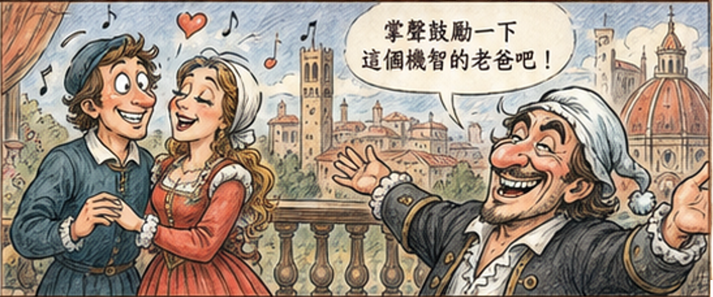

Buoso Donati
剛去世的富豪。雖然全劇大多時間都躺著，但他的遺囑比任何活人都更有殺傷力。
豪門爭產黑色喜劇：一張遺囑、一屋子貪親戚，以及一位把法律漏洞鑽得像義大利麵一樣滑順的狠角色。
各位鄉親父老、各位準備進劇院卻怕看不懂義大利文的善男信女，說書人今天要來講一齣普契尼的一幕短歌劇 《Gianni Schicchi》。這不是王子公主的童話，也不是英雄拯救世界的史詩，而是一場貨真價實的「豪門爭產災難現場」。
普契尼用這部作品證明：人類文明進步了幾百年，但親戚聽到「遺產」兩個字時，眼神還是可以瞬間從悲傷切換成會計模式。這齣戲短、狠、準，笑點像公證人的筆一樣尖，專門戳破大家口中的孝心。

剛去世的富豪。雖然全劇大多時間都躺著，但他的遺囑比任何活人都更有殺傷力。
外地來的聰明人，社交地位不高，腦袋卻比整個 Donati 家族加起來還靈光。
Schicchi 的女兒，甜美可愛；她的名曲聽起來像愛情，其實是高級版「爸爸拜託啦」。
Donati 家族裡少數還算有腦的青年。他想娶 Lauretta，也想讓家族停止集體丟臉。
法律程序的守門員。最可怕的是，他完全不知道自己正在見證佛羅倫斯年度最大詐騙秀。
一群嘴上喊「我們好難過」，手上卻忙著翻抽屜的人。特色：哭得假，算得快。
故事發生在富豪 Buoso Donati 的臥室。Buoso 剛剛斷氣，親戚們立刻展開集體悲傷表演。有人捶胸，有人拭淚，有人哭得像靈魂被抽走；但各位觀眾請注意，他們真正擔心的不是 Buoso 去了哪裡，而是他的錢去了哪裡。
忽然，流言傳來：Buoso 可能把所有財產都捐給修道院，讓修士們代他贖罪。這下好了，眼淚瞬間蒸發，大家開始翻箱倒櫃，比考古隊還專業。最後遺囑找到了，結果一讀，臉色全白：流言是真的。
原來大家不是哭死者，是哭自己一毛錢都分不到。

正當大家絕望到快把地板挖穿時，年輕的 Rinuccio 提議：「只有一個人能救我們——Gianni Schicchi！」
問題是，Donati 家族平常很看不起 Schicchi：覺得他鄉下、暴發、太精明，總之就是不夠「高貴」。但是人生就是這樣，平常嫌人家土，出事時又希望人家是神。
Schicchi 帶著女兒 Lauretta 出場。他看見這群勢利親戚，本來只想站在旁邊欣賞他們的崩潰。這時，歌劇史上最有名的「詐騙神曲」登場了：〈O mio babbino caro〉。
Lauretta 唱著：「爸爸啊，我真的很愛他，不幫我我就去跳河！」Schicchi 被盧到沒辦法，只能翻白眼：好啦好啦，我想辦法。

Schicchi 的計畫很簡單，也很大膽，簡單到可怕，大膽到犯法：既然外面還不知道 Buoso 已經死了，那就由他假扮 Buoso，叫公證人來立一份「新遺囑」。
當然，佛羅倫斯不是沒有法律。Schicchi 嚴肅警告眾人：偽造遺囑若被發現，會被砍斷一隻手，然後流放。換句話說，這不是普通詐騙，這是「少一隻手豪華套餐」。
於是他們搬開屍體，Schicchi 穿上睡衣，躺進床裡，開始練習病懨懨的老頭聲音。公證人到了，這場佛羅倫斯年度偽裝大賽正式開始。

公證人開始書寫。Schicchi 先用老人的聲音分配一些小錢、小物、小安慰，親戚們聽得眉開眼笑，點頭點得像機械鐘。
接著，重頭戲來了：Buoso 最值錢的三大資產——騾子、房子、磨坊。一隻是交通工具，一棟是豪宅，一座是穩定現金流。親戚們屏住呼吸，準備迎接命運的甜美點名。
親戚們瞬間炸鍋：這不是分遺產，這是當眾把整鍋湯端走。但他們一個字都不敢說，因為誰敢揭穿，大家就一起享受砍手加流放。Schicchi 一邊改寫人生，一邊提醒他們法律條文，簡直是用合唱方式進行法律恐嚇。
公證人走後，親戚們怒罵他是強盜、小偷。Schicchi 完全不慌，拿起棍子把他們趕出門。畢竟，現在這棟房子已經是他的了。

Donati 親戚被趕走後，世界終於安靜。Rinuccio 和 Lauretta 這對小情侶可以結婚了，兩人在陽台上甜蜜唱歌，彷彿剛剛那場大型詐騙只是婚前小插曲。
最後，Schicchi 直接面對觀眾，打破第四面牆。他問大家：Buoso 的財產難道還有更好的去處嗎？雖然但丁在《神曲》裡把他寫進地獄，但今晚要是各位看得開心，就請給這位狡猾老爸一點掌聲。
於是，全劇告訴我們：有時候，贏家不是最有錢的人，而是最有腦的人。

《Gianni Schicchi》表面上是鬧劇，骨子裡卻很尖銳：它把貪婪、階級偏見、家庭利益與法律形式全都丟進同一鍋佛羅倫斯燉菜裡。普契尼沒有說教，只是讓我們笑著看見人性的樣子——尤其是那些一邊哭喪、一邊找遺囑的人。
記得：在佛羅倫斯，眼淚可以演，詐騙不能演太爛。